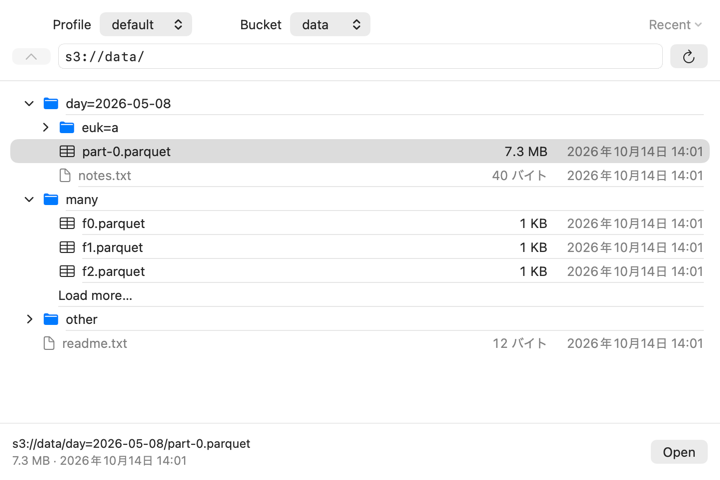

S3-native and Mac-native
Pick an AWS profile, walk through buckets and folders like in Finder, and open a Parquet object directly. Quetzal reads the footer and just the byte ranges it needs (HTTP range requests). Nothing is downloaded first, and the window tells you what it cost, for example “1.2 MB read · 7 requests”.
- Uses the profiles you already have in
~/.aws/configand~/.aws/credentials. - Never asks for keys. It only needs a profile name.
- Recent locations are remembered; right-click a row to copy its S3 URL.
